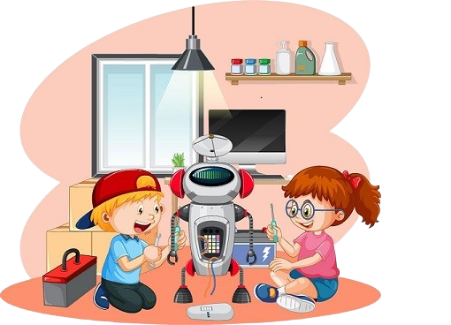

¡ROBÓTICA EDUCATIVA PARA NIÑOS DE 5TO AÑO!
Descubre, aprende y diviértete con la tecnología y los robots.
HISTORIA DE LA ROBÓTICA
La historia de la robótica se remonta a miles de años, con ejemplos como los autómatas antiguos y los primeros robots industriales. El término "robot" fue introducido por Karel Čapek en 1920, y luego Isaac Asimov popularizó la idea de robots en la ciencia ficción. La robótica moderna se desarrolló a partir de la mecánica, la electrónica y la informática, especialmente durante la Revolución Industrial y después de la Segunda Guerra Mundial.
El origen de la palabra "robot" proviene de una obra de teatro checa publicada en 1920 y titulada *Robots Universales Rossum*, del autor Karel Čapek. La obra tuvo tanto éxito que popularizó en todo el mundo la palabra "robota", que en checo significa “trabajo forzado”.
Sin embargo, el origen de los primeros autómatas es mucho más antiguo y se remonta a miles de años en la historia.
CARACTERÍSTICAS
PARTES DE UN ROBOT
Partes principales de un robot:
Cuerpo: Es la estructura física del robot, donde se montan todas las demás partes.
Cerebro (Controlador): Es el "cerebro" del robot, que controla los movimientos y las acciones del robot.
Brazos y Piernas (Actuadores): Estos permiten que el robot se mueva, agarre objetos y realice tareas.
Sensores: Le permiten al robot "ver" y "sentir" el entorno, como sensores de proximidad, cámaras o micrófonos.